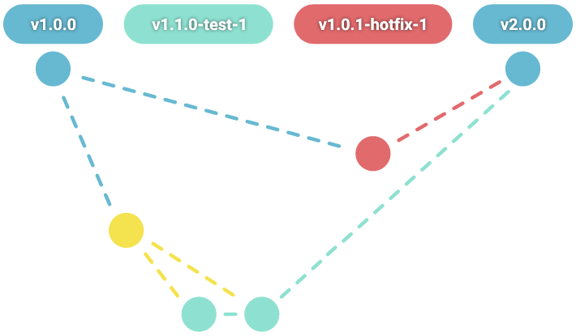
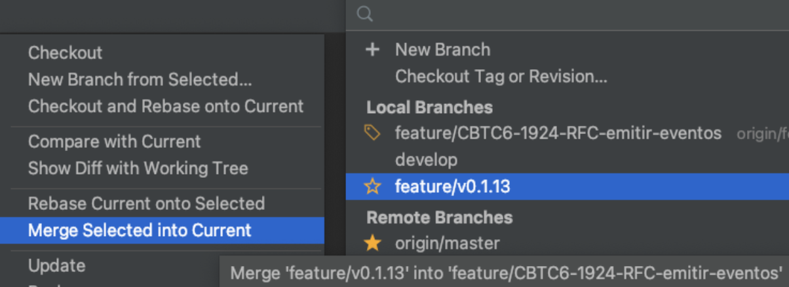
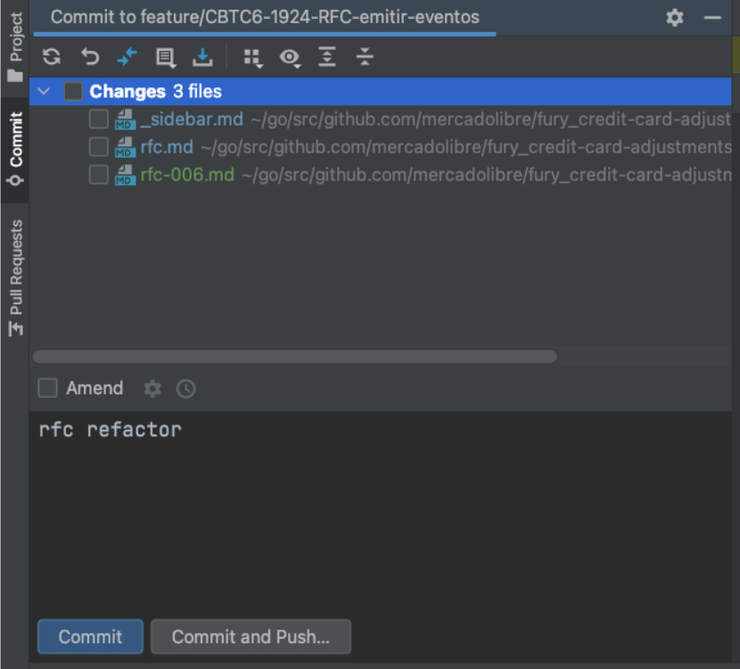
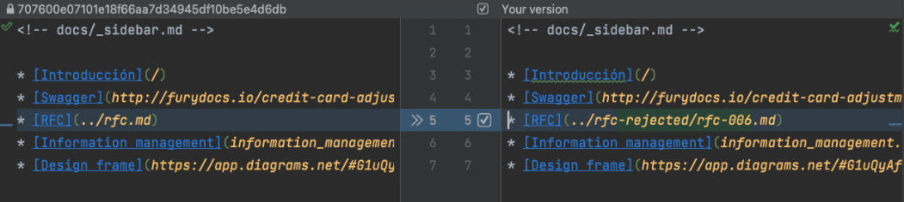
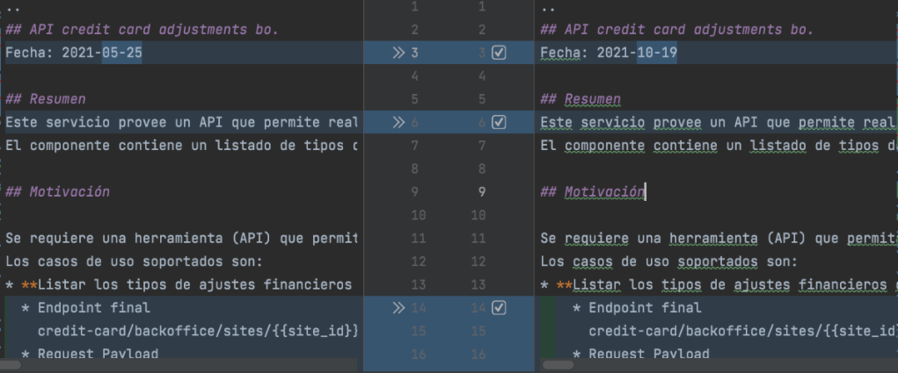
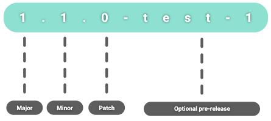
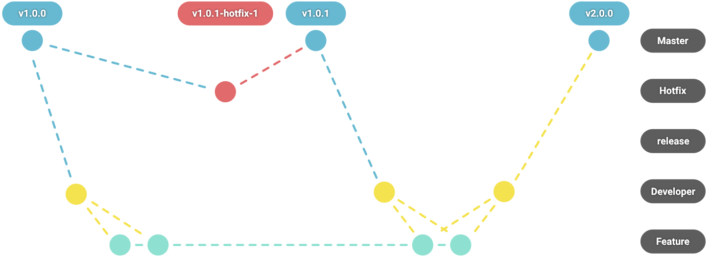

My notes and good practices with github
In my current job there is a high level of organization and communication, when developing projects and requirements, since we are 9 people in the team, who work remotely, that is why I am going to share some of the the good practices we use with github, our version control system
Basic commands
Git provides us with a large number of commands , however, the four basic commands used in git are the following:
git pull
git add .
git commit -m “Changes”
git push
I have read in many forums and videos that using only these 4 commands can cause problems, for example in the free code camp video “Git for Professionals Tutorial - Tools & Concepts for Mastering Version Control with Git” , it is suggested that instead of using git add . to upload all the changes to all the files, use git add < FILE NAME >, even decide by hand the changes to be made with the git add -p < FILE NAME > command, they also emphasize that the message is concrete and descriptive, in addition to being a commit per topic
git add < FILE NAME >
git add -p < FILE NAME >
However, in the team we carry out these basic actions in a slightly different way with the goland editor, always at the beginning of the day or when necessary, change to the integrating branch and bring the changes, and then move on to the branch of the task and merge select into current, this action package is also called rebase, or bring changes from the parent branch
Later, when we finish a task, we upload the changes with the visual tools, selecting all the files and those with changes that we do not want to upload are returned to the initial state with a rollback.
For edited files, the video suggests using the git diff < FILE NAME > command, which on the computer we do it visually simply by selecting the file, and if there is something that should not be, it is resolved in that same editor
 Finally, you finish uploading changes with the commit and push button, however it can be done with the git push command, or by specifying the branch
GitFlow
Another important issue when coordinating high-performance remote teams is the flow and conventions that will be used, for this there are several methodologies and frameworks, for which, I recommend the
Codly.TV video series, where they detail the pros and cons of each. In the specific case of Git Flow, which is the best-known flow, they highlight that for small teams it is cumbersome and generates many unnecessary ramifications, with which I totally agree, but when it comes to having larger teams and larger developments, If it makes sense to use a flow of this style, that's why in the team we use a modification of the classic Git Flow, which we call breaking Flow and which is practically the same GitFlow, but with a test integration to the release branch, this because many times When we fix bugs in the apps, we upload new feature changes that are not yet stable.
For the naming of the rams, a semantic versioning is used as in gitFlow

There are 2 stable branches: Master and develop, 2 branches for release: the master and the hotfix /. and 2 other branches of work: feature /.* and fix /.*
The following figure illustrates the difference with gitflow
Gitflow
Breaking Flow